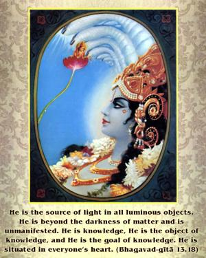
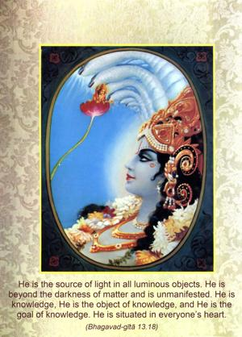
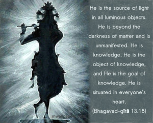
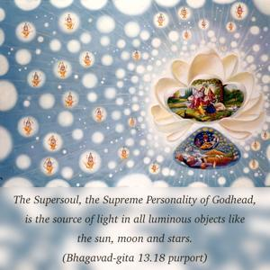
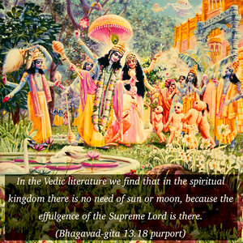
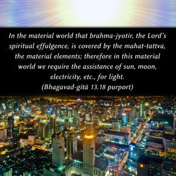
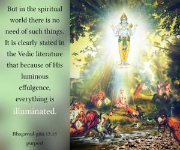

He is the source of light in all luminous objects. He is beyond the darkness of matter and is unmanifested. He is knowledge, He is the object of knowledge, and He is the goal of knowledge. He is situated in everyone’s heart.







The Supersoul, the Supreme Personality of Godhead, is the source of light in all luminous objects like the sun, moon and stars. In the Vedic literature we find that in the spiritual kingdom there is no need of sun or moon, because the effulgence of the Supreme Lord is there. In the material world that brahma-jyotir, the Lord’s spiritual effulgence, is covered by the mahat-tattva, the material elements; therefore in this material world we require the assistance of sun, moon, electricity, etc., for light. But in the spiritual world there is no need of such things. It is clearly stated in the Vedic literature that because of His luminous effulgence, everything is illuminated. It is clear, therefore, that His situation is not in the material world. He is situated in the spiritual world, which is far, far away in the spiritual sky. That is also confirmed in the Vedic literature. Āditya-varṇaṁ tamasaḥ parastāt (Śvetāśvatara Upaniṣad 3.8). He is just like the sun, eternally luminous, but He is far, far beyond the darkness of this material world.
His knowledge is transcendental. The Vedic literature confirms that Brahman is concentrated transcendental knowledge. To one who is anxious to be transferred to that spiritual world, knowledge is given by the Supreme Lord, who is situated in everyone’s heart. One Vedic mantra (Śvetāśvatara Upaniṣad 6.18) says, taṁ ha devam ātma-buddhi-prakāśaṁ mumukṣur vai śaraṇam ahaṁ prapadye. One must surrender unto the Supreme Personality of Godhead if he at all wants liberation. As far as the goal of ultimate knowledge is concerned, it is also confirmed in Vedic literature: tam eva viditvāti mṛtyum eti. “Only by knowing Him can one surpass the boundary of birth and death.” (Śvetāśvatara Upaniṣad 3.8)
He is situated in everyone’s heart as the supreme controller. The Supreme has legs and hands distributed everywhere, and this cannot be said of the individual soul. Therefore that there are two knowers of the field of activity – the individual soul and the Supersoul – must be admitted. One’s hands and legs are distributed locally, but Kṛṣṇa’s hands and legs are distributed everywhere. This is confirmed in the Śvetāśvatara Upaniṣad (3.17): sarvasya prabhum īśānaṁ sarvasya śaraṇaṁ bṛhat. That Supreme Personality of Godhead, Supersoul, is the prabhu, or master, of all living entities; therefore He is the ultimate shelter of all living entities. So there is no denying the fact that the Supreme Supersoul and the individual soul are always different.